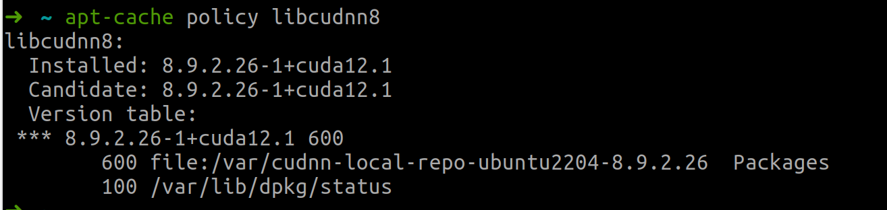

为nextcloud安装face recongition
FaceRecognition介绍
FaceRecognition 是一个 Nextcloud 应用程序，其目标是识别、分析和汇总用户图像中的面部数据，并在这些信息之上提供额外的功能，所有这些都具有 Nextcloud 的内置隐私。想象一下 Google 相册，但仅用于人脸（不检测物体……），并且您的图像永远不会离开您的 Nextcloud 实例。
该应用程序监听新图像文件的创建，并将它们排队以供以后分析。计划任务（或按需管理员）获取此队列，并分析图像中的面孔，并在可能的情况下按相似性对它们进行分组。
官方百科：https://github.com/matiasdelellis/facerecognition/wiki
安装所需的环境
Requirements：
- Nextcloud 22+
- Dlib PHP bindings
- PHP Bzip2
- 1GB of RAM
如果安装普通版本的，即利用CPU进行人脸识别，那么主要需要安装两个Dlib和Bzip2
如果服务器上有GPU,想利用GPU加速，那么还需要额外的操作，安装CUDA和cuDNN。
安装GPU环境
安装显卡驱动
在命令行中输入
1 | ubuntu-drivers devices |
可以查看在当前版本支持的驱动
如果要安装特定版本的驱动（例如：510）：
1 | sudo apt install nvidia-driver-510 |
或者可以安装推荐驱动（适用于大多数用户）
1 | sudo ubuntu-drivers autoinstall |
等待安装完成，然后重启服务器。
在terminal中输入 nvidia-smi查看cuda版本，正常情况下会返回如下：
可以看到，当前的cuda版本为12.1。 接下来就按照12.1版本的安装。
安装CUDA
打开官网：CUDA下载
选择 CUDA 12.x 然后根据自己的服务器情况选择：
官网会给出两条命令：
1 | get https://developer.download.nvidia.com/compute/cuda/12.1.1/local_installers/cuda_12.1.1_530.30.02_linux.run |
依次在终端中输入。
运行第二条命令sudo sh cuda_12.1.1_530.30.02_linux.run时，因为我们已经安装了显卡驱动，所以这次不需要再安装驱动了，直接continue，接受协议后，将Driver前面的勾去掉，然后点击Install
安装完成之后，打开终端，配置环境变量：
1 | vim ~/.bashrc |
退出后，让.bashrc文件生效
1 | source ~/.bashrc |
最后在终端输入nvcc -V可查看CUDA的版本
安装cuDNN
打开并登陆 官网 下载安装文件。按照实际情况选择要下载的文件，比如我的系统是ubuntu22.04，cuda版为为cuda 12.1，因此我会选择这两个文件：
然后可以打开 cuDNN安装步骤 这里面有具体的安装方法，下边的安装方法是特例：
首先，如果系统还没有安装zlib包，可以先sudo apt-get install zlib1g 安装一下。
在下载的安装文件目录下，运行如下命令
1 | sudo dpkg -i cudnn-local-repo-$(OS)-8.x.x.x_1.0-1_amd64.deb |
安装完成后，根据终端中的提示导入CUDA GPG key
即运行上面图片中的sudo cp ....命令。
接着刷新库：sudo apt update
然后安装下面三个库：
sudo apt install libcudnn8=8.9.2.26-1+cuda12.1sudo apt install libcudnn8-dev=8.9.2.26-1+cuda12.1sudo apt install libcudnn8-samples=8.9.2.26-1+cuda12.1
这里的libcudnn8和cuda版本的配对是指定的，可通过
apt-cache policy libcudnn8命令查看。可以在输入到
=后按tab键自动填充后面的版本

检验是否安装成功，可在终端中输入如下命令：
1 | cp -r /usr/src/cudnn_samples_v8/ $HOME |
如果上面的make命令提示缺少FreeImage.h，则运行：sudo apt-get install libfreeimage3 libfreeimage-dev 安装即可。
到此，GPU环境已经搭建完成。
安装PDlib-Dlib的PHP扩展
官方文档：https://github.com/goodspb/pdlib
如果不是用GPU,直接使用CPU识别人脸，那么只需要按照官方文档中的步骤顺序安装即可。
但若要启用GPU,则需要做一些修改。
在官方文档中，安装Dlib作为共享库时，是这样操作的，这种是没有GPU的安装方法
1 | git clone https://github.com/davisking/dlib.git |
修改为支持GPU的方法：
1 | git clone https://github.com/davisking/dlib.git |
其他操作都与官方文档中的一样。
修改PHP内存限制
由于Face Recognition至少需要1G的内存，但是内存大小与聚类质量和速度都有关系，因此，推荐的内存大小为2～4G。下面将PHP内存限制修改为3G
编辑php.ini文件，如果使用的是Apache代理Nextcloud,那么需要编辑两个地方：/etc/php/8.1/apache2/php.ini以及/etc/php/8.1/cli/php.ini在其中搜索memory_limit将其修改为3096M
1 | memory_limit = 3096M |
在Nextcloud中安装FaceRecognition应用
打开Nextcloud应用市场，在Multimedia中搜索 Face Recognition并安装，安装完成后，在管理设置中更改具体的设置
其中，对临时文件的更改是必须的。
随后在个人的面部识别中打开分析选项
到此Face Recognition已经安装完成。
使用方法
在服务器的nextcloud的安装目录下，一般为/var/www/html/nextcloud，利用occ命令进行人脸的识别聚类。
初始化内存大小和要使用的模型：
1
2
3
4
5
6# 启用人脸识别
sudo -u www-data php occ app:enable facerecognition
# 设置允许使用的内存大小
sudo -u www-data php occ face:setup -M 3096M
# 设置使用的模型
sudo -u www-data php occ face:setup -m 1下面是四个模型的比较：
| 比较 | 模型1(CNN5) | 模型2(CNN68) | 模型3(生猪) | 模型4(CNN5HOG) |
|---|---|---|---|---|
| 检测到人脸 | 可以找到图像非常小的人脸。 | 它使用与模型 1 相同的人脸检测器，因此具有相同的结果。 | 需要更大的图像才能获得相同的结果。 | 它使用与模型 1 相同的人脸检测器，因此具有相同的结果。 |
| 内存消耗 | 内存消耗根据所用图像的大小线性增加。 | 内存消耗根据所用图像的大小线性增加。与模型 1 完全相同。 | 无论分析何种图像，内存消耗都稳定在 100Mb 左右。 | 内存消耗根据所用图像的大小线性增加。与模型 1 完全相同。 |
| 处理时间 | 处理时间根据图像的面积线性增加 | 它与模型 1 完全相同 | 它比模型 1 和 2 略小 | 该模型对图像进行了两次分析，使用 CNN 并用 HOG 对其进行补充，因此它的速度实际上是原来的两倍， |
| 集群质量 | 高（某些侧面可能有一些错误） | 低（非正面的面部可能会有更多错误。） | 非常高（只找到相当正面的面孔） | 非常高（类似于模型 3，但面孔更多） |
人脸分析：
1
sudo -u www-data php occ face:background_job [-u|--user_id USER_ID] [-t|--timeout TIMEOUT] [--defer-clustering] [-M|--max_image_area MAX_IMAGE_AREA]
此命令将完成所有工作。它负责搜索图像、分析图像并将图像中发现的人脸聚类到相似的人群中。
请注意，此命令会占用大量 CPU 和内存！在将其放入 cron 作业之前，建议先手动尝试，以确保满足所有要求并且计算机上有足够的资源。
命令旨在连续运行，因此您需要使用 cron 安排它每隔一段时间执行一次，并指定超时时间。它可以每 15 分钟运行一次，超时为
-t 900（因此，它会在 15 分钟后自动停止，cron 将再次启动它），或者每天运行一次，超时为 2 小时，例如-t 7200.如果
USER_ID提供，它将只循环遍历给定用户的文件。请记住，每个用户都必须单独启用分析，否则此命令将忽略该用户。如果
TIMEOUT提供，它将在指定的秒数后停止，并在下一次执行中继续。将此值与计划任务的时间结合使用，以在一天中分配系统负载。如果
MAX_IMAGE_AREA提供，则限制要馈送到神经网络的图像的最大区域（以像素 ^2 为单位），从而有效地降低所需的内存。如果面部检测随机崩溃，请使用此选项。如果使用该
--defer-clustering选项，它会更改进程的执行顺序，在分析结束时延迟面部聚类，以便让人员简单地执行命令。配置完成后可以利用该命令启动人脸识别，
并且可以设置定时任务：
1
2
3sudo crontab -e
# 在其中输入如下内容
*/15 * * * * cd /var/www/html/nextcloud && sudo -u www-data php occ face:background_job -u anking >> log_file_path 2>&1这将每15分钟执行一次人脸识别聚类任务
重置信息
1
occ face:reset [--all] [--model] [--image-errors] [--clustering] [-u|--user_id USER_ID]
该命令可以彻底清除所有图像、人脸和人群。如果您想出于任何原因从头开始，这是理想的选择。
您必须指定是否要完全重置数据库
[--all]或仅重置当前模型[--model]并且必须再次分析所有图像，或者您可以仅重置人员的聚类[--clustering]并且只需要再次进行聚类，或者仅重置具有的图像错误[--image-errors]尝试再次分析它们。如果
USER_ID提供，它只会重置特定用户的信息。统计数据
1
occ face:stats [-u|--user_id USER_ID] [-j|--json]
此命令返回找到的图像、面孔和人员数量的摘要。
如果
USER_ID提供，则只返回给定用户的统计信息。如果使用
--json参数，它会以更适合用其他工具解析的 json 格式打印统计信息。迁移模型
1
occ face:migrate [-m|--model_id MODEL_ID] [-u|--user_id USER_ID]
此命令允许将模型中获得的面迁移到新的面。请注意，人员姓名不会迁移，用户必须重新命名。Always 建议从头开始分析任何已配置的模型，但迁移它可以节省大量时间。
您必须使用该选项指定要迁移的模型
MODEL_ID。如果
USER_ID提供，只需迁移给定用户的面孔。
常见问题
官方：https://github.com/matiasdelellis/facerecognition/wiki/FAQ
里面有一些常见的问题，有用的就是设置不想分析的图像，让人脸检测的时候忽略并跳过他们：
在想忽略的文件的根目录下创建一个.nomedia文件即可。